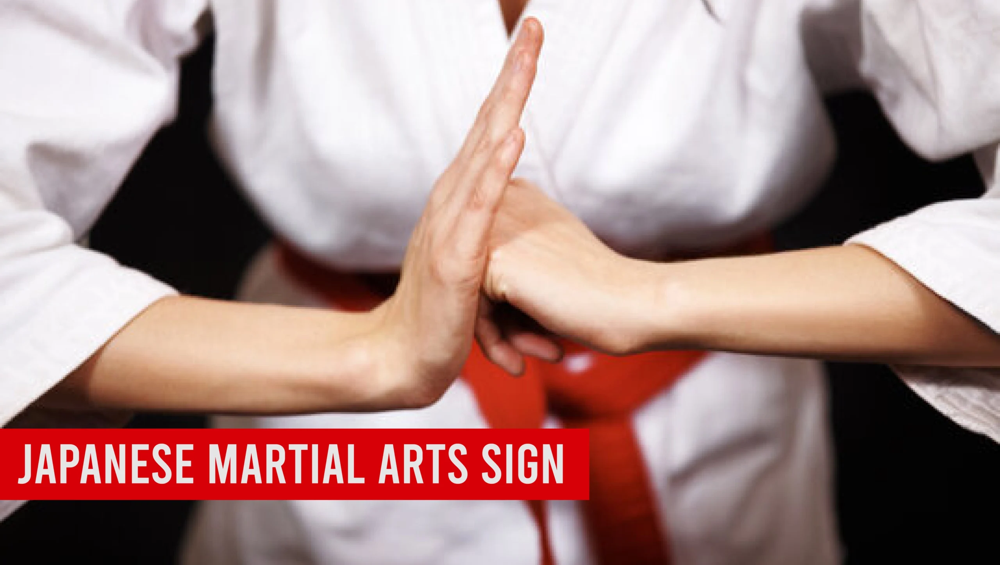
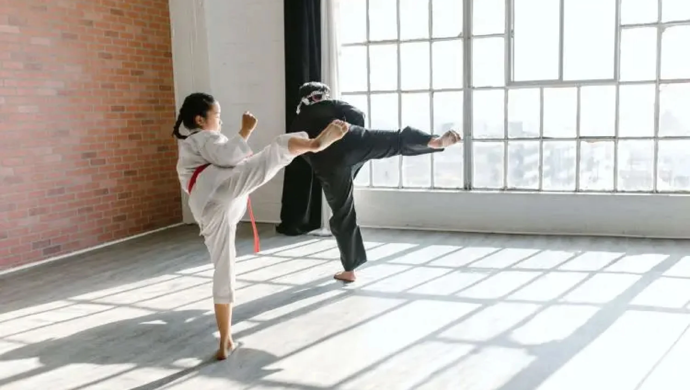
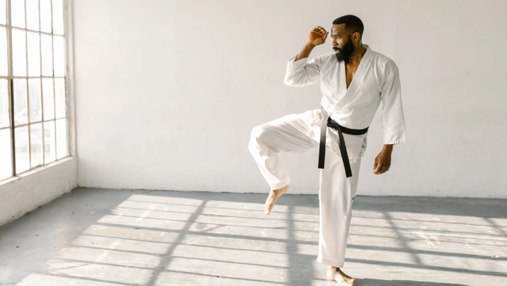

Japanese Martial Arts Sign: Exploring the Meaning Behind Traditional Symbols

Introduction
The blog title “Japanese Martial Arts Sign: Exploring the Meaning Behind Traditional Symbols” aims to provide readers with an in-depth understanding of the various symbols used in Japanese martial arts, their historical significance, and meanings. Japanese martial arts are rich in cultural heritage, and symbols play a crucial role in conveying the philosophies, values, and traditions of these practices.
In this blog, we’ll explore the fascinating world of Japanese martial arts signs, from their origins to their meanings today. Understanding these symbols is not just for practitioners; it’s for anyone interested in the deep-rooted culture of Japan. Let’s jump right in!
Key Points
- Understanding the significance of traditional symbols in Japanese martial arts.
- Overview of common symbols and their meanings.
- Historical context of martial arts symbols in Japan.
- Exploration of the philosophy behind the symbols and their cultural relevance.
- Importance of symbols for practitioners and how they inform practice.
The Cultural Context of Japanese Martial Arts
Japanese martial arts didn’t just pop up out of nowhere. They grew out of a rich tapestry of Japanese culture, deeply influenced by history, philosophy, and spirituality.
Historical Evolution
Martial arts in Japan have roots that stretch back centuries. They evolved through the samurai class, who used them for combat and personal development. Over time, these arts transitioned from practical fighting techniques to a focus on discipline and self-improvement. This transformation reflects broader cultural shifts in Japan, such as the move from a feudal society to a more modern one.
Also Read Our Article: Best Martial Arts for Self-Defense: Which Style Suits You?
Influence of Historical Events
Several historical events shaped martial arts in Japan. For example, the Meiji Restoration in the late 1800s led to the modernization of Japan, and martial arts began to be practiced more than a sport and a way to promote health. This shift also created a space for the codification of symbols that represent different martial arts schools and philosophies.
The Role of Symbols in Japanese Martial Arts
Symbols are not just pretty pictures; they are the heart and soul of Japanese martial arts. They serve multiple functions, from communication to tradition.
Communication and Tradition
In a world where words sometimes fail, symbols convey meanings that can transcend language barriers. They communicate values, philosophies, and even the spirit of the martial art itself. For example, the kanji for “Do” (道) represents the path or way, emphasizing the journey of personal growth.
Read Our Article: What Martial Art Destroys Boxers? Comparing Fighting Techniques for Ultimate Dominance
Emotional and Spiritual Connections
Many practitioners feel a deep emotional connection to the symbols of their martial art. These symbols often embody the ideals they strive for, such as honor, respect, and perseverance. When you wear a uniform adorned with these symbols, it’s like carrying a piece of your martial arts journey with you.
Common Symbols Found in Japanese Martial Arts
Let’s take a closer look at some of the most common symbols you might encounter in Japanese martial arts.
Table
| Symbol | Meaning |
|---|---|
| Kanji for “Do” (道) | The path or way, representing the journey of personal growth. |
| Kanji for “Jutsu” (術) | Technique or skill, often associated with practical applications. |
| Dragon | Represents strength, wisdom, and the ability to overcome challenges. |
| Crane | Symbolizes grace, balance, and longevity. |
These symbols are not just decorative; they carry deep meanings that resonate with practitioners.
The Kanji Characters in Martial Arts
Kanji characters are a vital part of Japanese martial arts symbolism. Each character tells a story and conveys a philosophy.
Key Kanji Characters
- Budo (武道): This term combines “bu” (warrior) and “do” (way), signifying the way of the warrior. It emphasizes the ethical and philosophical aspects of martial arts.
- Kendo (剣道): Literally meaning “the way of the sword,” Kendo embodies the spirit of the samurai and the pursuit of self-perfection.
These kanji characters are often seen on uniforms, banners, and dojo walls, serving as constant reminders of the martial arts journey.
Also Read Our Article: Martial Arts Kali Sticks: Techniques, History, and Benefits
The Symbolism of Animals in Martial Arts
Animals often symbolize various traits in Japanese martial arts. Here are a few notable examples:
Strength and Agility
- Tiger: Represents strength and ferocity. In martial arts, the tiger symbolizes the power and determination needed to overcome obstacles.
- Crane: This bird is a symbol of grace and longevity. It represents balance and the idea of moving fluidly in combat.
These animal symbols are not just for decoration; they inspire practitioners to embody these qualities in their training.
The Meaning Behind Emblems and Crests
Emblems and crests are unique to different martial arts schools, and they often tell a story of lineage and values.

Emblems and Their Significance
Each martial arts school in Japan, known as a dojo, often has its emblem or crest, known as a mon (紋). These symbols encapsulate the dojo’s philosophy, lineage, and unique approach to martial arts.
Table
| Emblem | Meaning |
|---|---|
| Kano Gakko Mon | Symbolizes the founder of Judo, Jigoro Kano, emphasizing education and mastery. |
| Hombu Dojo Mon | Represents the main headquarters of various martial arts, signifying authenticity and tradition. |
| Shihan Mon | Often associated with advanced instructors, indicating a high level of skill and teaching ability. |
These emblems foster a sense of belonging among practitioners and serve to honor the history of their martial arts.
Read Our Artile: Martial Arts Karate Gi: A Guide to Styles, Materials, and Sizes
Historical Origins of Symbols in Martial Arts
The origins of symbols in Japanese martial arts are as rich as the practices themselves. Many symbols have evolved over time, reflecting changing cultural values and martial philosophies.
Evolution of Symbols
For instance, the symbol of the dragon, initially linked to power and authority, has evolved to represent wisdom and transformation. It reflects not just physical prowess, but also personal growth and enlightenment.
Changing Meanings
Some historical symbols have transformed dramatically. The swastika, for instance, has ancient roots in Japanese culture, symbolizing good fortune and prosperity. However, its association with World War II has altered its perception. Understanding these shifts is crucial for grasping the broader context of martial arts practice.
Philosophical Foundations Linked to Symbols
Symbols in martial arts are deeply tied to philosophical concepts. One of the most significant is Bushido (武士道), the way of the warrior.
Representing Bushido
Bushido highlights merits such as loyalty, honor, and respect. The practices and symbols associated with these values guide practitioners in their training and behavior both inside and outside the dojo.
Table
| Bushido Virtues | Symbolism |
|---|---|
| Loyalty | Often represented by the dog, symbolizing fidelity and commitment. |
| Honor | Portrayed through the wa, or circle, representing harmony and completeness. |
| Respect | The handshake symbolizes the importance of mutual respect in martial arts practice. |
These symbols and virtues shape the character of martial artists, reinforcing their commitment to these ideals.
The Aesthetics of Symbolism in Martial Arts Uniforms
Now let’s talk about how symbols are integrated into martial arts uniforms, known as gi (着).
Importance of Uniforms
The gi is not just clothing; it is a canvas for symbolism. From color belts to patches, everything carries weight. The colored belt system, for instance, symbolizes a practitioner’s journey through different skill levels—starting from white for beginners to black for advanced practitioners.
Patches and Markings
Patches on a gi often feature the dojo’s emblem, representing the practitioner’s affiliation and loyalty to their school. Using symbols in uniforms helps instill a sense of pride and community among students.
Also Read Our Article: Is Boxing A Martial Art? Comparing It to Other Martial Arts Forms
Techniques and Forms Represented by Symbols
In the world of Japanese martial arts, techniques and forms (known as kata, 型) can also be symbolically represented.
Significance of Kata
Kata are fixed patterns of movements meant to teach martial principles and techniques. Each kata name often reflects a specific concept or animal, integrating symbolism and physical practice. For example, a kata named after the crane emphasizes balance and grace, guiding practitioners to embody these qualities while training.
Techniques and Their Representations
Table
| Technique/Kata | Symbolism |
|---|---|
| Heian Shodan | Represents the concept of peace and tranquility. |
| Nihon Daito Ryu | Symbolizes the way of the two swords, representing both offense and defense. |
| Shuri-ryū | This kata is named after the capital of the ancient Ryukyu Kingdom and emphasizes fluidity and transformation. |
These representations help practitioners connect their physical movements to deeper philosophical meanings.
Cultural Variations in Martial Arts Symbols
Not all martial arts symbols are created equal; they can vary significantly across different disciplines as Aikido, Judo, and Karate.
Differences Across Disciplines
In Aikido, for instance, the symbol of the circle emphasizes harmony and balance, whereas in Judo, the kanji for “ju” (柔) signifies gentleness and flexibility. Karate, on the other hand, often incorporates symbols such as ki (気), representing energy or spirit.
Table of Martial Arts Symbols
Table
| Martial Art | Primary Symbol | Key Meaning |
|---|---|---|
| Aikido | Circle (円) | Harmony |
| Judo | Ju (柔) | Flexibility and gentleness |
| Karate | Ki (気) | Energy and spirit |
Understanding these variations enriches our appreciation for each martial form and reminds us of the diverse approaches within Japanese martial arts.

Myths and Misconceptions About Martial Arts Symbols
There are many myths surrounding martial arts symbols that can confuse practitioners and enthusiasts alike.
Common Misunderstandings
For example, some believe that wearing a black belt signifies mastery, while it typically just indicates the attainment of a certain level of competence. The journey we take is just as valuable, if not more so, than reaching our destination. Others might think that symbols are purely aesthetic. In reality, they carry deep meanings tied to history and philosophy.
- Myth: The black belt denotes mastery.
- Truth: It symbolizes a level of competence and commitment.
Learning Through Symbols: Educational Benefits
Understanding symbols in martial arts can dramatically enhance training.
Cognitive and Physical Preparation
Learning what these symbols represent can help practitioners focus their training. Knowing that a kanji represents a philosophy can motivate a student to embody that principle during practice. For example, if a student understands the significance of respect, they may treat their fellow students and instructors with greater regard.
Tricks and Traditions: Rituals Involving Symbols
Rituals play a significant part in martial arts. Many of these rituals involve symbols, fostering a sense of community and respect.
Common Practices
When entering a dojo, practitioners often bow to the Kamiza (shrine) as a sign of respect. This simple act is heavily symbolic and reminds practitioners of the values they uphold.
Story of a Ritual
I recall my first day at a dojo. We all lined up before the class, paying homage to the emblem on the wall that represented our dojo’s spirit. At that moment, I felt part of something much bigger than myself.
Symbolism in Contemporary Martial Arts Practice
Symbols remain relevant to modern martial arts practices. They adapt to meet the needs of contemporary society while still preserving their historical roots.
Modern Adaptations
Today, you’ll find symbols appearing in various forms, from clothing to merchandise. Many dojos use social media to showcase their emblems, making them accessible to a global audience.
Global Influence of Japanese Martial Arts Symbols
Japanese martial arts symbols have transcended borders, influencing different cultures worldwide.
Symbols in Global Practices
Martial arts, like Karate and Judo, have made their way to countries across the globe. As they spread, so did their symbols, often adopted and adapted by various cultures.
Table
| Culture Influence | Symbolical Adaptation |
|---|---|
| USA | Bushido principles in MMA training |
| Brazil | Karate symbols in capoeira festivals |
They form new meanings in their new contexts, creating a rich patchwork of martial arts heritage.
Future of Martial Arts Symbols
As we look at the future, martial arts symbols will continue to evolve.
Trends in Symbolism
The rise of technology may influence the way symbols are used in martial arts. For instance, digital platforms may help share not only the techniques but also the significance behind the symbols of different schools globally.
Conclusion
Understanding traditional symbols in Japanese martial arts opens a fascinating window into their cultural significance. These symbols aren’t just decorative; they carry deep meanings that can shape our approach to training. For practitioners and enthusiasts alike, knowing these symbols enriches our appreciation for the art and its history. As we continue to explore Japanese martial arts signs, we discover more about ourselves and the values we uphold in our journeys.
FAQ's
The best martial art for beginners depends on personal goals and preferences. Brazilian Jiu-Jitsu (BJJ) is favored for its focus on technique, making it accessible for all. Karate is also a strong choice, emphasizing basic movements and self-discipline. It’s beneficial for beginners to try different classes to find what suits them best.
There is no age limit for starting martial arts! People of all ages can benefit from training. Many schools offer adult classes that cater to newcomers, allowing them to learn at their own pace and enjoy the physical and mental benefits of martial arts.
The cost of martial arts training varies by school, location, and class types. Many schools offer flexible pricing, including monthly memberships or per-class fees. It’s wise to explore different options to find a budget-friendly school that meets your needs.
Participation costs typically range from $100 to $150 per month for memberships, with per-class rates between $15 and $30. Annual memberships may be available for $800 to $1,200, often providing savings. Additionally, consider any extra fees for uniforms and equipment.
For your first day, wear comfortable athletic clothing. Most schools will provide a uniform (like a gi) for you to wear once you enroll, but you want to be ready to move in whatever you choose! Just check with the school beforehand to see if they have any specific requirements.
The time it takes to earn a belt varies widely based on the martial art and your dedication. Generally, it can range from 3 months to several years. Factors influencing this timeline include attendance, effort, and the specific belt progression system of the style you are learning.
Absolutely! Martial arts classes are intended for all fitness levels. Many schools offer beginner programs that help you gradually build your strength and flexibility, so don’t worry if you’re starting from scratch!
Train with us in Coppell
The first class is free. Shorts, a t-shirt and a water bottle. We lend the rest.
Book a free class